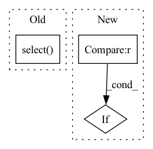

Pattern ID :40774
Before Change
(sf.col("item_id") == "i3") & (sf.col("user_id") == "u2")
)
pred_for_test = (
model.predict_pairs(
test_pair.select("user_id", "item_id"),
log,
user_features,
item_features,
)
.select( "relevance")
.collect()[0][0]
)
res = get_first_level_model_features(model, test_pair)
row_dict = res.collect()[0].asDict()After Change
model, log, user_f, user_f, item_f, test_pair
)
// холодный пользователь
if item_f is not None :
_fit_predict_compare_features(
model,
log.filter(sf.col("user_id") != "u2"),In pattern: SUPERPATTERN
Frequency: 3
Non-data size: 3
Instances Fragment ID: 115177566
Project Name: sb-ai-lab/replay
Commit Name: 4e8aafa35332ac0817814a76e08a2a200980e015
Time: 2021-06-18
Author: AAVolodkevich@sberbank.ru
File Name: tests/models/test_lightfm_wrap.py
M Class Name: AnonimousClass
N Class Name: AnonimousClass
M Method Name: test_enrich_with_features(4)
N Method Name: test_enrich_with_features(4)
M Parent Class:
N Parent Class:
M File Name: tests/models/test_lightfm_wrap.py
N File Name: tests/models/test_lightfm_wrap.py
M Start Line: 136
M End Line: 157
N Start Line: 171
N End Line: 188
Before Change
// если юзеров или айтемов нет, возьмем всех из лога,
// чтобы не делать на каждый trial их заново
if users is None:
users = self.get_values_in_column(log.select( "user_id") .distinct(),
"user_id")
else:
users = self.spark.createDataFrame(data=[[user] for user in users],After Change
log, test_start=test_start,
drop_cold_users=False, drop_cold_items=True
)
elif how_to_split == "randomly" :
train, test_input, test = splitter.log_split_randomly(
log,
drop_cold_users=False, drop_cold_items=True, Fragment ID: 115177556
Project Name: sb-ai-lab/replay
Commit Name: 7c1a24b1e385a746a097fd45e558af84b5d9f4ce
Time: 2019-10-04
Author: rose.aysina@gmail.com
File Name: sponge_bob_magic/scenarios/popular_scenario.py
M Class Name: PopularScenario
N Class Name: PopularScenario
M Method Name: research(15)
N Method Name: research(13)
M Parent Class:
N Parent Class:
M File Name: sponge_bob_magic/scenarios/popular_scenario.py
N File Name: sponge_bob_magic/scenarios/popular_scenario.py
M Start Line: 47
M End Line: 62
N Start Line: 34
N End Line: 70
Before Change
quantized_tensors = []
for i, minimum in enumerate(encoding_min):
tensor_slice = tensor_to_quantize_dequantize.select( channel_axis, i) .contiguous(memory_format=torch.contiguous_format)
tensor = torch.clamp(tensor_slice, minimum.item(), encoding_max[i].item())
tensor = torch.round(tensor / delta[i].item()) + offset[i].item()
tensor = (tensor - offset[i].item()) * delta[i].item()After Change
:param channel_axis: Axis along which per channel quantize dequantize is performed
:return: quantized dequantized tensor
if len(tensor_to_quantize_dequantize.shape) > 1 :
encoding_min = grad_fn.broadcast_to_tensor(tensor_to_quantize_dequantize, encoding_min, channel_axis)
encoding_max = grad_fn.broadcast_to_tensor(tensor_to_quantize_dequantize, encoding_max, channel_axis)
delta = grad_fn.broadcast_to_tensor(tensor_to_quantize_dequantize, delta, channel_axis) Fragment ID: 115177558
Project Name: quic/aimet
Commit Name: 39d718ee58119c7fa7454959792727ee6cafea61
Time: 2022-04-05
Author: quic_mangal@quicinc.com
File Name: TrainingExtensions/torch/src/python/aimet_torch/tensor_quantizer.py
M Class Name: QuantizeDequantizeFunc
N Class Name: QuantizeDequantizeFunc
M Method Name: _per_channel_quantize_dequantize(6)
N Method Name: _per_channel_quantize_dequantize(6)
M Parent Class: torch.autograd.Function
N Parent Class: torch.autograd.Function
M File Name: TrainingExtensions/torch/src/python/aimet_torch/tensor_quantizer.py
N File Name: TrainingExtensions/torch/src/python/aimet_torch/tensor_quantizer.py
M Start Line: 615
M End Line: 624
N Start Line: 613
N End Line: 623